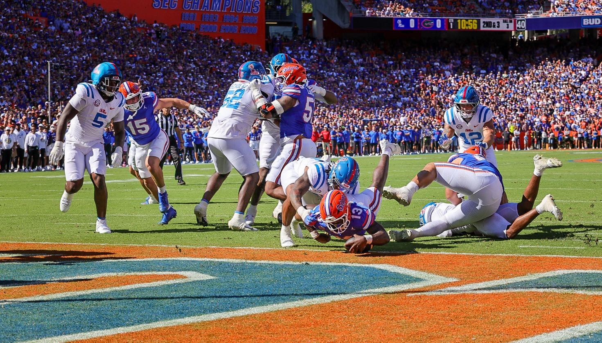

‘It Ain’t Fully Awake Yet’: Sumrall Says Gators Haven’t Arrived After Routing No. 4 Ole Miss
GAINESVILLE — Jon Sumrall said he barely had a voice left after Florida’s 52-28 win over No. 4 Ole Miss on Saturday night. He used what was left to deliver the message he has repeated all season.
“We have not arrived,” Sumrall said. “We have so much room to grow and get better, and we still have to do that or we’re not going to be pleased with outcomes that we have coming up.”
It’s not asleep, but it ain’t fully awake yet. I promise you, I didn’t come here for us to be average.
“I would never bet against him”
Sumrall said during the week that Ole Miss had proven more than his team. Asked after the game what he made of the oddsmakers now, he didn’t back off.
“I think they’re still pretty smart. We just played better today,” Sumrall said. He pointed to Ole Miss’ 16-2 record over the past year and to quarterback Trinidad Chambliss. “I don’t bet, but if I did, I would never bet against him.”

By the numbers
302 Florida rushing yards against No. 4 Ole Miss. “Makes my job pretty easy,” Aaron Philo said.
142 yards and three touchdowns for Jadan Baugh on 29 carries.
126 yards on 12 carries for Duke Clark, including the 45-yard score.
52-28 final, Florida’s first top-five win since 2020.
Injury update
Receiver Bailey Stockton took “a pretty significant shot to his back” on the play that drew a targeting flag, Sumrall said, but it “doesn’t look like anything that should keep him out long term.”
Florida hosted a big group of recruits for the game, and Sumrall tied them to his theme. Four-star safety Cyion Smith committed to the Gators hours before kickoff.
Florida plays at Missouri on Saturday, Oct. 3, at 3:30 p.m. ET.